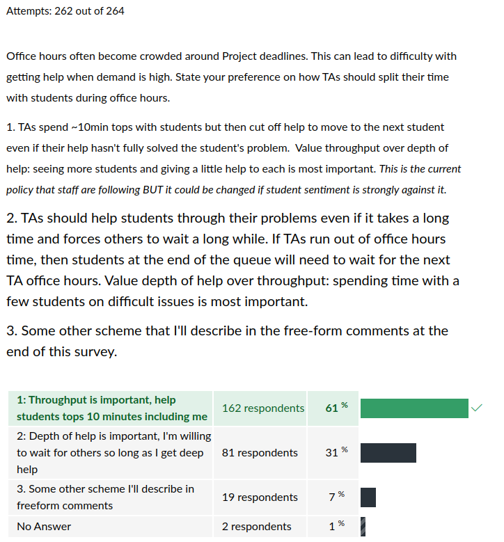
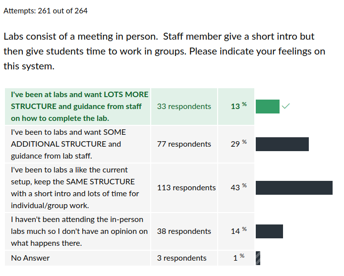
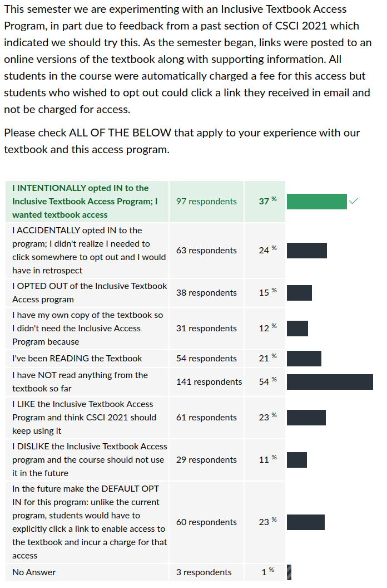

CSCI 2021 Midterm Survey Results
Table of Contents
Summary Statistics for Multiple Choice Questions







Frequent Free-form Feedback
| Count | Comment |
|---|---|
| OVERALL COURSE | |
| 52 | Class is going well overall |
| 54 | Class is hard / moves fast / takes a lot of time |
| LECTURE | |
| 7 | Like the video recordings of lecture |
| EXAM 1 | |
| 5 | Practice Exam was lower difficult than actual exam |
| 5 | Project and exam in same week was brutal |
| 2 | Exam was too long for the time given |
| OTHER | |
| 10 | Help Groups of students during office hours |
| 4 | Get assignment deadlines on Canvas, not just Gradescope |
| 4 | More TAs would help |
Notable Comments + Responses
Instructor responses are in italics.
Lecture
- Sometimes slides are updated with a newer version in the middle of the week with adjusted content, which is quite difficult for me to keep up with things using the older version.
I do change my mind or find bugs; I try not to alter the page numbering or content ordering much but it is inevitable that things change a bit.
- I feel that the code within lectures has been especially helpful for me to understand the different ideas that we are learning. If more of those coding examples and exercises are possible, I think everyone would benefit from that.
Will do. I try to do as much coding as possible in lecture but it never seems like enought.
Labs / HW
- I struggle with the labs and the quizzes which I feel often contain materials not covered in lecture.
There is always a bit of slack/tension between lecture position versus labs/HW. Usually HW is stuff we will discuss over the course of the week's lecture and sometimes lab leads lecture by a bit. It's hard to get everything lined up perfectly. Hopefully lab demonstrations at the beginning of lab hit some of the high points about content that might be leading lecture.
- Labs is a bit weird since sometimes the TAs explain the lab in portions, where they explain it and have us work on it, then stop to explain another part. By the time we reach the other explanations, most of the class is barely paying attention or we're too focused on the first part. I think the best way is to give the general explanation/outline at the start for all 3 questions and then give us uninterrupted work time. I really do appreciate the guidance from the TAs, it just seems weirdly structured.
I've instructed TAs to regroup labs midway at times to ensure there is some discussion about what has happened and what's next. Sorry if that is disruptive. If there is widespread discontent, we can make adjustments.
- If it's possible, could the homework solutions be uploaded after the homework is due so we can check our understanding before we move on to new topics in upcoming weeks?
I usually try to upload HW/Lab solutions a day or two after the deadline passes. If I forget, remind me via email.
Project 1
- I really, really think you should ease off on these projects, at least based on the first one.
- Project 1 for me was very difficult, so much so that I had to turn it in late. However, I learned a lot from this project. It helped me understand more about the course and helped me on the midterm exam.
- I enjoyed doing project 1 even though it was hard. I think having the work cut out for you in comments and project documentation helps a lot.
- The project SUCKED! Felt amazing getting all the "ok" responses though.
- If we can have projects and tests be on different weeks it will be really great and probably result in better results overall.
- The project difficulty was definitely a shock that I will need to adjust to, but their is some momentum now. It seems that the first project of every CSci class tends to be difficult due to the infamiliarity with the language.
- Problem 3 felt like you wanted us to suffer why are there so many functions, and why do we have to create our own main file after already doing problems 1 and 2?
- Project 1/the labs aren't that difficult.
One of the most common elements of feedback was that Project 1 was difficult or at last time-consuming. Consulting the bar graphs above, 50% of students reported P1 was harder than other medium sized projects they've done. 36% indicated they spent more than 15 hours on the project. I'd like to investigate this more, in particular to find out some of the sources of that difficulty. Perhaps we'll get a "focus group" together to discuss.
- So far I've struggled with structuring my time and it hurt me on the project, but I think I'm learning how much time I should give myself now.
Learning time management is an incredibly valuable skill. It takes practice particularly with coding stuff but coming to understand how fast you yourself can get things done will be a great boon to your working life.
- For the project…. I think that banlet should have been one project and treemap a different project. Maybe with a week and a half for each? That would have given a bit more mental wiggle room I think.
That's worthwhile to consider and TAs indicated some intermediate deadlines might assist students in focusing in early. I'll consider such a structure for the spring offering.
- Sometimes on the project it seemed like the TAs didn't know what they were doing.
This is quite possible. In some cases, Kauffman have released the project in the evening and a TA who has office hours the next day has not yet had a chance to study it thoroughly. In most cases, TAs that are not able to offer immediate assistance will do a follow-up by having students email their code for later consideration.
Office Hours
- Waiting for office hours for 4.5 hours on that tuesday before the project was due was not very fun
- If we could have separate sign ups regarding parts of projects/labs I think it might make OH more time efficient for everyone.
- One way the lines could go faster is to teach small groups of students who are stuck on the same problem.
- The wait times for office hours are ridiculous. Maybe allowing students to listen to other students' problems would be helpful
This was a common element of feedback and many TAs are already utilizing this strategy when office hours lines are long: call out for students in the queue who are interested in discussing the details of one part of a problem. It is not a panacea: students must actually pay attention when TAs ask for folks interested in a particular problem. In addition, students are often confused and find that their problem is actually different than the one under discussion. Finally, it can feel unfair that a student who just arrived at office hours gets help quickly because a TA happens to select a "group problem" that applies while a student who has been stuck on an individual bug is left to wait. We'll continue to do our best.
- If there could be some sort of similar situation with chem/physics TA help (where there's always 1-2 people available from 8-6pm) that would be easier to line up in a queue and possibly get help, since there will be someone always around.
This is unfamiliar to me. If you'd like to email me about what this system of office hours looks like, I'd be happy to hear about it since you indicated it worked well.
- I tried going on Tuesday, but it was packed and felt messy. I think holding it online would make it more organized. However, if there is an opportunity to get a bigger room, then we should do it in person.
By far, TAs feel in-person office hours are more effective and easier to administer than online office hours despite their "messiness". We are securing larger rooms for subsequent Unified Office Hours which is likely to help the queue and herd stay organized.
- Office hours have been insanely helpful. I am totally blown away by how much our TAs know and how well they are able to ask leading questions that guide me to figure out the answer myself.
- Despite having a slow start on the project, I kept going to the office hours and the TAs are amazing. They put in way over what was required of them, and it's hard to put in words how grateful I am for their service. PRAISE BE TO THESE TAS!!!
I think we have a truly stellar team of devote TAs. This whole endeavor would come to a crushing halt without them and I'm eternally grateful to them.
- If a student desperately needs to get help on a large scale problem, they should have the option to schedule a meeting with a TA
This is already an option. Students can request meetings with staff members outside of office hours via email. However, scheduling this usually needs to happen at least a few days before the meeting occurs as staff have packed calendars too.
- Whenever I visit office hours, I need to wait for like 3 hours to get 2 minutes of help. Even some TAs said 'watch the lecture,' even though I already watched the video. I did not wait for 3 hours to hear that. That was a waste of my time.
I'm sorry that happened to you. It must have been extremely frustrating. If a TA is truly short to the point of rudeness, that is something I would want to hear about as it is against or policies and principles. If the TA listened to your question and suggested that rewatching a particular lecture might be helpful, that is relevant advice. If you explained in turn that you already re-watched the lecture and were struggling to understand the relevance, then the TA should have helped you to understand the connection. If this happens again, drop me a line about it.
Exam 1
- I'm a little afraid that I won't have enough time to study for the exam considering Project 1 is due a couple days before.
A few years ago we experimented with making the Project due AFTER the exam. Exam scores were marginally worse and there was still an enormous crush of students wanting help on the project due date. TAs indicated they felt students were not as well prepared for the exam overall and so we chucked that approach. It does create some stress during exam week BUT one of the best preparations for the exam is to code up the project.
- One thing I would like to add - which I doubt will be either read or taken into action but at least my conscious will be clear - is that the first exam setup was terrible. I had no elbow room, the "nope" rows are obviously there to prevent cheating but it affected my test-taking environment significantly. Please get rid of the nope rows, or make an additional testing section, this was unbearable.
This is a difficult problem. Our lecture room is far from ideal for ANY purpose but especially for exams. Sacrificing one row to allow staff to move through the room more efficiently to answer questions and enforce policies does mean some folks will be squeezed together more. However, according to my counting, allowing folks to sit in that row would have only a marginal net gain of space for a few students around the room. Mail me if you think this had severe effects on your exam performance and I might be able to assist in some ways. No professors I know control which rooms they are assigned for their classes. If I did, it'd be Keller 3-210 all the day long.
- The exam was difficult, for me, mainly because (like I said) I'm quite slow. Would you be able to provide any tips to get faster at it?
Yes, but I don't imagine they will be particularly satisfying. Practice. Go back to lab and HW problems you've solved before and re-work them. Spot check some C code you wrote for the project and see if you can write down and English explanation for it. Open up the Lecture code packs and go through the code. Make some changes, compile it, and use Valgrind to see what the memory errors might look like. Like anything, with repetition your ability to recognize problems and their solutions will improve but it takes time. And, alas, time is always against us.
Potpourri
- I feel like everyone around me has more knowledge on every one of the topics and that I am always treading in deep water.
It is very easy to feel that way and convince yourself of it. But in truth, at least a dozen students said something to this effect. When you are truly learning and pushing yourself, it is stressful. That stress is the process of you expanding and becoming bigger, stronger, and more capable than you were in the past. It can often make you question your self-worth or suitability. That's in part because any stress opens the mind up to doubt. Embrace the doubt as normal and something that most students experience at one time or another. Learning to cope with doubts, manage them, and overcome them is a skill that is infinitely more important than two's complement integers or pointer arithmetic. You can learn this stuff. It will just take time and patience.
- I wish that Professor Kauffman had more office hours.
The week prior to the project deadline, I had about 4 students spread across my 2 office hours on Tue/Wed. I stayed from 3-6pm at the Tue Unified Office Hours to assist. By the time I left, I had asked all waiting students if they had further questions and all of them said no. I had 6 or 7 students at my Wed office hours on the project due date and helped solve all their problems between 9am-10am except for one student that arrived at 9:58am. On the Tue after the exam, one student came to office hours and we talked for an hour about research in computer science. I don't think I need to hold more office hours. It's just that students want I and other TAs to be available to them at some specific moments that are convening to them. While I'm happy to make arrangements for meetings outside of office hours, this takes some planning ahead of time.
- My last 1933 course had a ticket system that TA's would respond to that was super helpful.
I'm curious about this so drop me a line to explain a bit more about it.
- The textbook is a bit annoying. I personally dislike reading it online, and the formatting is atrocious.
Agreed. Last Spring we had a different online version that matched the formatting of the physical version, basically an online PDF of the textbook which was much easier on the eyes. I tried to explain to the textbook folks how horrid the green-on-green rendering is on VitalSource but I don't get the impression they care much. I'm leaning towards ditching the Inclusive Textbook Access as I have not been impressed with the utilization by students (54% in the charts above indicate they haven't read the textbook at all).
- Nice to be past the freshman 'intro to programming' classes that I think most of us slept through.
- I don't do well with trials-by-fire. I understand this is kind of how 2021 works but it super does not gel with my learning style. I need structure and background and context.
Th
- I would also like if there was a bit more information on running C files without use of the make functions that are included in code packs
Have a look at HW01 which covers the basics of invoking
gcc"by hand", naming the resulting executable and so forth. AllmakeandMakefilesdo is to run a bunch of such commands en masse to alleviate the tedium of typing them out each time.
- I think that I am doing well overall, but I think that some Canvas announcements would be good to remind about upcoming project deadlines or exam dates.
- I'm doing fine in this class. However, I would say that I had to put in a lot of effort in order to do well in this class.
- I think this class feels rewarding. By this I mean that it is hard work and it kind of sucks time out of my day, but when I finally learn and understand a concept, I feel accomplished and feel like I earned it.
- I feel like I am getting back what I'm putting in
- I feel that as long as you come to class and put in an effort to engage it's completely manageable.
In most honest efforts, you get back what you put in. They're called "engagement points" for a reason: if you don't devote some time and effort to owning this stuff for yourself, there is little I can do for you. So, with that in mind, please proceed to…

The C Language
- I just wish C was more enjoyable to program in, as it felt like I would have been able to solve the problem in about 8 hours if I had been in a different language [instead of 15 hours in C].
A treemap in Java or Python would take WAY less time to code up. That's why those languages are usually used to introduce basic coding and fundamental data structures. However, you can't get a good sense of machine architecture with them. And you also can't have Python without writing its interpreter in C first. That's why we're up to all these shenanigans.
- The concept of pointers and needing to allocate memory can be difficult to understand at times.
Truly. With practice it gets easier, but there will always be inherent difficulties with those things.
- I'm struggling with the project 1 is mainly because I do not really good at C lauguage. So shame as a CS student I'm bad at using C, the most basic computer language.
While C is small as a language compared to Java and Python and OCaml, it is no more "basic" than them. A pencil is no more basic than a paintbrush to an artist: they are different tools to create different effects. An artist who has practiced drawing with a pencil for some time may feel frustrated when they first begin to study painting. But there is no shame in inexperience. It just takes time to master the new tool. Be patient with yourself. Practice and in a year you will be much better at coding in C which will make you much better at coding in general.
- For the life of me I can't figure out why I've sunk at minimum 31 hours into this project to learn the fscanf syntax.
Consider that 31 hours now will serve you a lifetime. Even if you don't code in C often, you'll have gained exposure to a number of ideas that will crop up in other languages: End of File as a return value, format specifiers for output AND input, open file handles, parsing input and converting it binary forms that the machine can use. There's a LOT baked just into fscanf() and if you managed to absorb all of it already, you're doing great.
Some Very Special Messages
- On problem 3, should I start with the main() function, or do all the functions and write my own test cases? I did the latter, but it meant that I couldn't ever check my code with the machine until the last step. But if I had done the former, I would be relying soley on the machine test cases, but those are often difficult because each test case relied on multiple functions.
It's much worse than you think. For example, how would one write a test case for
treemap_add()that does not usetreemap_get()ortreemap_print()? One could attempt to directly interrogate the structs and check that certain pointers are set with appropriate key/val pairs in them, but this breaks abstraction barriers by assuming the structs will have certain field names, layout, and so forth. That means any test fortreemap_add()will need to rely on some other function liketreemap_get()and vice versa.What beginning students often miss when they learn about software testing is that at some level, there is always "coupling", groups of related functionality that must all work together cohesively. "Unit Tests" are sometimes taught as "function tests" but this is only possible in the simplest, almost trivial cases. A "Unit" is more often a group of related functions that manipulate a data structure and cannot each be tested in isolation. Testing the Unit necessitates using several coupled functions which makes it more difficult to determine which function might be "responsible" for bugs. In fact, it might be a disagreement between the two functions placing the fault on all of them and none of them.
Software testing is much trickier than it may appear at first. I'm glad that Problem 3's Treemap got you thinking about this set of difficulties as they won't go away. While my approach to the test cases balanced ease of implementation for me with reasonable rigor, it does take some practice to interpret test results and utilize them to debug. That is invaluable practice that will server you long into the future.
- I personally think that the projects should be partner projects. If the TAs are essentially going to be writing the code for us anyway when we finally manage to get into OH, why not allow us, students, to figure it out together? It makes no sense to do programming individually in my opinion.
Thanks for the feedback but you seem to be harboring some ideas that I need to correct.
If any TA "writes code for you" during office hours without explanation or discourse, I would like to know about it. This is not my directive to them and in all cases I am aware of, they abide by it and instead help students to understand what code should be written. This is to support students becoming self-sufficient by the end of their studies.
If you finish your degree and are not able to write programs and solve problems on your own, "individually", then you will be in bad shape and are not likely to be able to hold down a position for long. During a job interview, evaluators are not likely to be impressed if you rely heavily on them to help you solve screening questions. On the job, it will become apparent to those around you that you require constant assistance which is likely to affect your viability at a company. Working in a team is important but it is prefaced on the ability of team members to contribute effectively. To contribute, you'll need some individual skills. Practice now to prepare to be a team member.
- Yes, nobody cares about assembly language or lower level programming that doesn't even support classes in 2022 but still.
The processor also does not care about objects and classes. However, if you want to cater to the humans that want to code with them, you'll have to know how to talk to the processor to "make" them. That's how Java and Python do it, by coding their guts in C. If want them to keep growing or want to do better than them, learn to speak to the processor in C.
- QUICK QUESTION: How much time would you recommend spending on a problem (or a problem in a function) before asking a TA for help?
GREAT QUESTION but it's not quick. I don't think anyone has asked it in a succinct fashion like that. Typically I'd suggest visiting a TA when you are truly out of ideas about things to try. As you get more experience, perhaps through visiting TAs, you'll be able to generate more things to try on your own and so will come to need less help. Here are some things to try before visiting a TA.
- If you have a compiler error, read the error message, look at the line or lines generating the error, search the internet for the error message, read the posts associated with them, make changes to your code and try recompiling, write down what you changes you have tried in a list so that you don't repeat yourself. If you've noodled on a compiler error for 1 hour and tried 6-10 different variations and can't figure out, get help. Once you get help to resolve it, write down the cause and how it was resolved. Even if you don't ever look at the note again, the processing describing problem and solution will solidify it in your mind so that you can solve similar problems quickly going forward.
- For memory problems in a test case including output that stops due to a segfault, look at the lines Valgrind reports are problematic, especially early ones that indicate problems before the line that caused a segfault. Speculate about what could be going on, how memory could be uninitialized or not allocated or how logic could be causing out of bounds accesses or null pointer dereferences. Write down what you expect be true at various points in your code and then print values in your code to see if they match your expectations. If you know how to use a debugger, set some breakpoints and inspect things while in your code. If you've tried that for a 1.5hours and are still not able to figure out a memory bug, get help.
- For output or logic problems in which expected and actual output don't match, describe specifically out loud to yourself how the two outputs are mismatched. Describing the problem Out loud is important as it forces you to verbalize things which might cause you to notice things you hadn't before. Talking through your bug with a rubber duck or other inanimate listener is known to assist with this process. As with memory problems, if you expect certain parts of your code do certain things, add print statements to it to ensure the code is running and values are as expected. Don't guess. Don't assume. Verify and base your study on observations: "This part of my code should print this part of the output. I'll add a debug printing statement before it make sure it executes… That's weird, it didn't print the debug statement. Why wouldn't I be getting to this part of the code?" If you have peppered your code with print statements for 1.5 hours and everything checks out but the bug persists, get help.
- If you are not sure how to get started coding up a portion of required functionality, do some reading. Examine the problem specification carefully. Speak it out loud. Re-explain it in your own words. Look especially at diagrams or demonstration sessions as these often show the end result that is desired. Write a little "pseudocode" to describe a process you might think is applicable, then execute your pseudcode on a small example to see if it makes sense. This will tell you whether your understanding is solid enough to start coding or if you need some further study. If there references or background material mentioned like "as we did in Lab02" that you don't remember, go back to those materials and re-examine them. Try to construct statements like "in this case, the code should do X then Y but if that's not true it should do Z" and as you have doubts, form them as a question of "in case W should the code do U or V?" which you can easily ask someone else. At the point you have such questions, you can often search the specification and get answers yourself but if you turn up no answers, you have some very specific inquiries to put on Piazza or put to a TA in office hours. After 2 hours of studying the problem specification, writing it in your own words, posing questions and attempting to answer them yourself, if you are still stuck with the same issue, then get help.
Maturity is knowing what to try and how to rule out possibilities through analysis and experiment until the truth emerges. In my experience raw intellect is nowhere near as useful in coding problems than grit, determination, and patience. You are enrolled in an education to get help to speed up your learning but learning to help yourself is the ultimate goal of this kind of education.
One other thing that is worth noting: I personally feel that I debug things fast not because I have any particular talent for it, but rather because I have 20 years of experience looking at bugs now and 10 of those are with looking at student code bugs. If you spent 20 years of your life solving Sudoku puzzles, carving wooden sculptures, practicing dance steps, you'll be extremely good at recognizing patterns, subtleties, and solutions in those domains. There won't be many surprises just as there aren't many surprises for me in student bugs. But that takes time. Don't be discouraged if you are having trouble with a bug: get help to overcome it but then take measures so you can overcome it yourself in the future.
The Wild Side
Thanks for making the class funny
🤣
Dealing with the terminal makes me sad.
😢
- I'm also projecting frustrations I've had from previous courses so it's not entirely specific to csci2021
Whatever helps you blow of steam. Glad to hear that ours is not the only class that is frustrating…
- I've breezed through 1933 and 1933.
Er…
- Scheme I'm describing for office hours solution: Just no office hours cancel them all - sink or swim baby thats how the world works.
CSCI 2021 Spring 2023: Scorched Earth edition. No office hours. Class is taught entirely in binary. Lecture 01:
0001010000100010001001001000011111001010001001110001...
- I do not think a student should ever have to wait 3-4 hours to get help for 10 mins from a TA. I'm also going to be extremely unhelpful and not propose a solution.
- Please switch the existing Course Schedule and Materials webpage to a darker theme with an option for a lighter theme. I wish the entire internet was wholly composed of dark themes.
Prototype Dark Theme:
- tired
Amen.